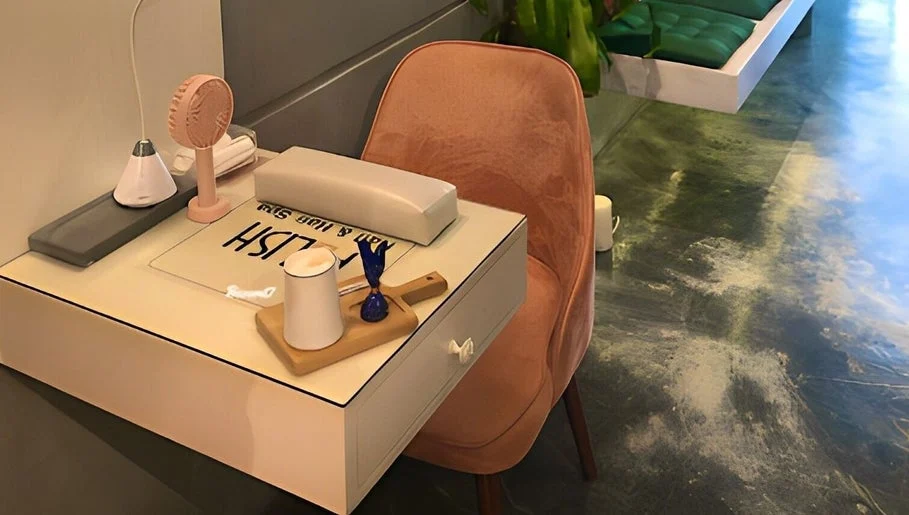

بوليش
فن الأظافر
في قلب التجربة.
في بوليش بالخبر، يجتمع فن الأظافر مع خدمات الشعر والرموش والعناية. استعرضي خيارات الألوان والتركيب والتصفيف، ثم اختاري موعدك عبر قناة الحجز المنشورة.
تعرّف على الموقعالخبر، الراكة الجنوبية
أظافر بتفاصيل متنوعة، وعناية بالشعر والرموش. اكتشفي بوليش واستعرضي الأعمال قبل زيارتك.

على ذوقك
ابدئي من القسم الذي يهمك، ثم استعرضي الخيارات.
الصور والأعمال
صور من الحساب العام وصفحة المنشأة؛ اضغط على أي صورة لعرضها كاملة.

بوليش
في بوليش بالخبر، يجتمع فن الأظافر مع خدمات الشعر والرموش والعناية. استعرضي خيارات الألوان والتركيب والتصفيف، ثم اختاري موعدك عبر قناة الحجز المنشورة.
تعرّف على الموقعخطّط لزيارتك
اختاري ما يناسبك، ثم راجعي اختياراتك قبل الانتقال إلى الحجز.
قائمة منشورة على Fresha بتاريخ ٢١ سبتمبر ٢٠٢٦. قد تختلف الأسعار حسب الخيارات والعروض؛ السعر والموعد النهائيان على منصة الحجز.
يسعدنا اللقاء
Abdulrahman Aldakhel Street, Al Rakah Al Janubiyah, Al Khobar, Eastern Province
+966 56 700 8707بوليش